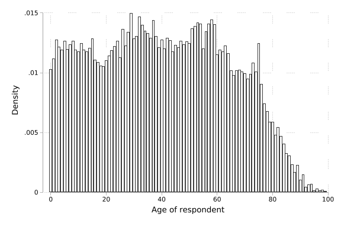
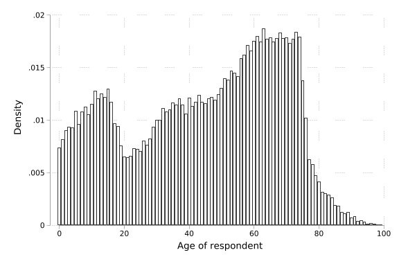
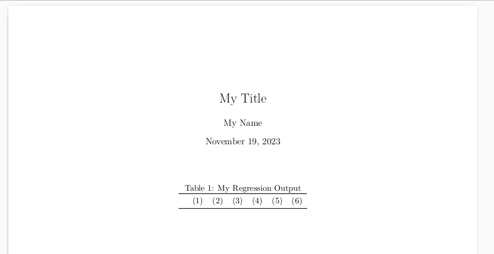
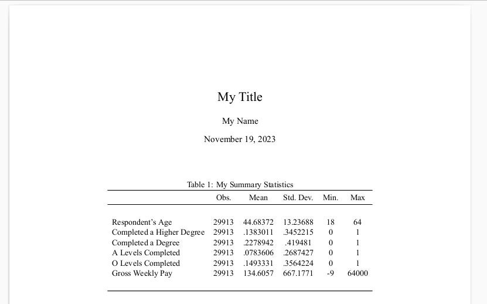
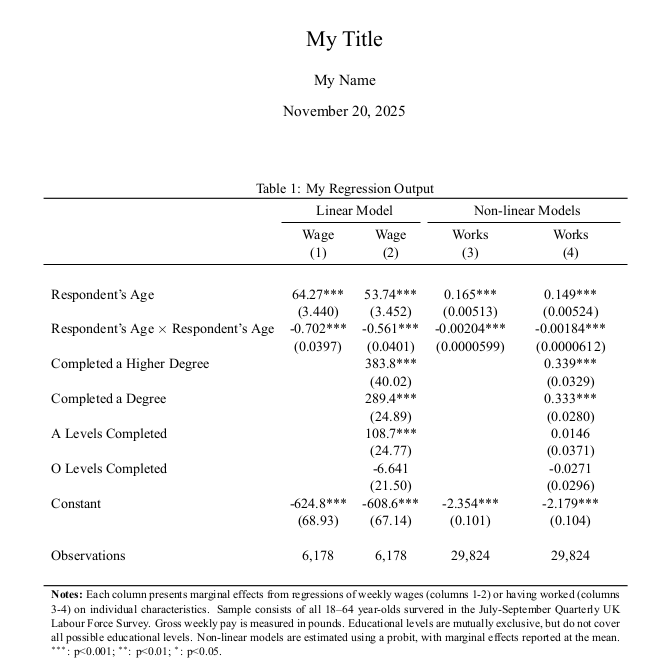

use lfsp_aj23_eul_pwt22
sum AGE [w=PWT22]
hist AGE [w=PWT22], dStatistical Tools
Statistical Analysis
Given the importance of statistical analysis in our work, it is important to be comfortable and familiar with standard routines and procedures in whichever language you use. Here, we will discuss some basic details of conducting statistical analysis with data. We will not discuss assumptions underlying models, as you will see this all formally in econometrics classes, but we will discuss important details related to the computational implementation of regression models. We will also discuss the ways to automate work-flow in statistical analysis. This section of the course should be considered as a complement to your formal econometric training, as we will not delve into the many technical details which you require prior to doing any formal statistical work. Rather, we will focus on a few key elements related to computational procedures you may wish to use.
This Class
In this class we will work with Stata, though many of the points we raise will be relevant for any other language. We will also work with data from a household survey. The survey we will use is the UK Labour Force Survey. This is a survey which has been conducted continually since 1973, and is currently conducted in a quarterly fashion. Some background information on the survey can be found at this link. The data which we will use is the July-September quarter from 2022, and the data covers 53,287 individuals from 24,200 households.
The survey data is available from the UK Data Service. This data is available as part of a teaching agreement, and the UK Data Service states:
Students or members of staff at a UK institution of higher or further education (UK HE/FE) can register using the username and password issued by their institution. Information about registration is available at How to register if you are a UK academic user.
Please register to ensure correct use of this data at the following link: https://beta.ukdataservice.ac.uk
Below we will use the principal survey data. Whenever we use survey data it is extremely important that we read the survey documentation. All resources required for this class are provided below:
- Survey data (zipped, Stata format)
- LFS User Guide Volume 1 - Background (zipped, pdf)
- LFS User Guide Volume 2 - Questionnaire 2022 (zipped, pdf)
- LFS User Guide Volume 3 - Variable Details 2022 (zipped, pdf)
Weighting
Prior to discussing data analysis, a first key element we must consider is survey weighting. Household survey designs are based on probabilistic sampling. Each individual has a given probability of being selected, and every individual who is eventually selected will represent some particular number of observations (for example, individuals of the same age and sex) in the entire population. Of course, this does not mean that a chosen person is identical to all other similar people in the population, but rather, this person provides us with information on a given member of a group. It is thus of considerable importance that we consider uncertainty inherent in sampling, and also account for weights should we wish to conduct inference appropriately for the true population of interest.
In general, information on weighting and survey design will be discussed at length in survey documentation. For example, in the case of the UK LFS, this is discussed in Section 10 of Volume 1 of the documentation included above. To see why this is important, consider the weighted and unweighted ages of respondents:
Variable | Obs Weight Mean Std. dev. Min Max
-------------+-----------------------------------------------------------------
AGE | 51,612 66952258 40.38739 23.59585 0 99
(frequency weights assumed)
(start=0, width=1)sum AGE
hist AGE, d Variable | Obs Mean Std. dev. Min Max
-------------+---------------------------------------------------------
AGE | 53,287 44.64676 23.29989 0 99
(start=0, width=1)

By examining the historams in Figure 10.1, we can observe that older individuals are over-represented in surveys, and failing to weight will result in the analysis of a population which is quite different to the UK population in general (panel (b) instead of panel (a)). We can also see that when we weight, the “Weight” column returns to us a value of 66,952,258, which is the quantity of individuals the survey represents: essentially the population of the UK in 2023.
In the first code block above we have been somewhat laissez-faire about the way we have written weights. In particular, we have written [w=PWT22]. Stata has a number of weighting schemes (frequency weights, analytic weights, and probability weights) which we should use in different settings. In the case of means, these weighting commands provide identical results given that they each weight each observation by the weight provided in PWT22. For this reason, if we are simply interested in a weighted mean, we can simplify things and simply indicate [w]. However, in the case of probabilistic sampling, we should use probability weights. Indeed, below when we are estimating regression models we will see that using the wrong type of weighting could lead to huge mistakes and so probability weighting will be key. However, in the case of summary statistics via the sum command, standard probability weights are not supported for the reasons discussed here. We will return to explore the importance of weighting; and highlight why we always must use probability weights when working with a survey based on probabilistic sampling below when exploring regression models.
Exporting Models
Generally, when we are conducting analysis we will want to present output in our papers. Ideally, this should be done in a way which is completely manual, and avoids any use of copy and paste, or formatting by hand. This is the case for at least two reasons:
- Manually incorporating results is prone to error
- If some prior process is changed, we do not wish to have to make changes by hand
For this reason, we will see a tool which allows us to automate the exportation of summary statistic and regression results. There are many such tools in Stata and in other languages, and we will see one example here as an illustration of the types of procedures which should be followed. Specifically, we will explore the estout commands written by Ben Jann. There are also many ways which one could build a work flow, but again, here we will focus on one which is particularly flexible: which is to typeset documents with LaTeX. Please note that the below procedures could be implemented in a largely identical way to export tables in excel format, and include them into word documents.
LaTeX is a type-setting system in which documents are written first in a markup language, and then compiled to generate a pdf. Details of LaTeX can be found in a number of places, including:
- The LaTeX website: https://www.latex-project.org/
- A LaTeX wikibook: https://en.wikibooks.org/wiki/LaTeX
To compile LaTeX, we need to install a LaTeX compiler on our computers, or otherwise have access to a compiler. There are also many ways that this could be done, but two potential options are:
We will spend some time discussing this in class, but to see how we can use LaTeX and estout to automate regression tables, note that a minimum LaTeX document can be written as below. The first part of this code (up to “maketitle”) defines the format of the document, and then below we define a table, simply consisting of 6 columns containing column numbers.
\documentclass[11pt]{article}
\usepackage[margin=1in]{geometry}
\usepackage{booktabs}
\title{My Title}
\author{My Name}
\date{\today}
\begin{document}
\maketitle
\begin{table}[ht]
\caption{My Regression Output}
\begin{tabular}{lcccccc}
\toprule
& (1) & (2) & (3) & (4) & (5) & (6) \\ \midrule
\end{tabular}
\end{table}
\end{document}
Examples
To see how we can incorporate data analysis directly into our work flow, consider the generation of some simple summary statistics from the UK LFS data. We will first open the data below and generate a number of binary measures for educational levels. We will then summarise these variables, along with respondent’s ages and gross weekly salary. Finally, we will use the estout group of commands to build a summary table.
Summary Statistics
use lfsp_aj23_eul_pwt22, clear
gen higherDegree = HIQUAL22==1
gen firstDegree = HIQUAL22==8
gen ALevel = HIQUAL22==35
gen OLevel = HIQUAL22==53
sum AGE higherD firstD ALevel OLevel GRSSWK [w=PWT22] if AGE>=18&AGE<=64
estpost summarize AGE higherD firstD ALevel OLevel GRSSWK [w=PWT22] ///
if AGE>=18&AGE<=64, listwise
esttab, cells("count mean sd min max") nomtitle nonumber noobs
lab var ALevel "A Levels Completed"
lab var OLevel "O Levels Completed"
lab var higherDegree "Completed a Higher Degree"
lab var firstDegree "Completed a Degree"
lab var GRSSWK "Gross Weekly Pay"
lab var AGE "Respondent's Age"
esttab using sumStats.tex, replace cells("count mean sd min max") ///
nomtitle nonumber noobs label fragment plain collabels("")
Variable | Obs Weight Mean Std. dev. Min Max
-------------+-----------------------------------------------------------------
AGE | 29,913 40156493 41.23436 13.33035 18 64
higherDegree | 29,913 40156493 .1418944 .3489476 0 1
firstDegree | 29,913 40156493 .2348255 .4238968 0 1
ALevel | 29,913 40156493 .0827169 .2754584 0 1
OLevel | 29,913 40156493 .138363 .3452863 0 1
-------------+-----------------------------------------------------------------
GRSSWK | 29,913 40156493 136.2767 466.9111 -9 64000
(analytic weights assumed)
| e(count) e(sum_w) e(mean) e(Var) e(sd)
-------------+-------------------------------------------------------
AGE | 29913 4.02e+07 41.23436 177.6982 13.33035
higherDegree | 29913 4.02e+07 .1418944 .1217644 .3489476
firstDegree | 29913 4.02e+07 .2348255 .1796885 .4238968
ALevel | 29913 4.02e+07 .0827169 .0758773 .2754584
OLevel | 29913 4.02e+07 .138363 .1192226 .3452863
GRSSWK | 29913 4.02e+07 136.2767 218005.9 466.9111
| e(min) e(max) e(sum)
-------------+---------------------------------
AGE | 18 64 1.66e+09
higherDegree | 0 1 5697980
firstDegree | 0 1 9429769
ALevel | 0 1 3321619
OLevel | 0 1 5556171
GRSSWK | -9 64000 5.47e+09
-----------------------------------------------------------------------------
count mean sd min max
-----------------------------------------------------------------------------
AGE 29913 41.23436 13.33035 18 64
higherDegree 29913 .1418944 .3489476 0 1
firstDegree 29913 .2348255 .4238968 0 1
ALevel 29913 .0827169 .2754584 0 1
OLevel 29913 .138363 .3452863 0 1
GRSSWK 29913 136.2767 466.9111 -9 64000
-----------------------------------------------------------------------------
(output written to sumStats.tex)Above we can see generated summary statistics table as Stata output, but it has also been written as a LaTeX table in the document sumStats.tex. Here, this has been done simply as a “fragment” allowing us to incorporate it directly into a table outline that we build in LaTeX. This is done below, where you may note that we are calling the output from Stata by using LaTeX’s “input” command:
\documentclass[11pt]{article}
\usepackage[margin=1in]{geometry}
\usepackage{booktabs}
\usepackage{fontspec}
\setmainfont{Times New Roman}
\title{My Title}
\author{My Name}
\date{\today}
\begin{document}
\maketitle
\begin{table}[ht]
\caption{My Regression Output}
\begin{tabular}{lccccc}
\toprule
& Obs.& Mean & Std.\ Dev. & Min. & Max \\
\midrule
\input{./sumStats} \\ \bottomrule
\end{tabular}
\end{table}
\end{document}
This looks reasonable, though if we wish we can further optimise the table, for example by adding formatted table notes (which we do in LaTeX), and a more appropriate use of decimals and numerical formatting, which we do within esttab. We will discuss the nature of these commands at more length in class. The nice thing with this setup is that now if we wish to make changes to the data, or include further variables, this can be done entirely from within our Stata code, and then we will simply need to re-compile the LaTeX file, as “sumStats2.tex” will be updated everytime we re-run our Stata code, and LaTeX will simply compile with whatever version our code produces.
lab var AGE "Respondent's Age"
esttab using sumStats2.tex, replace ///
cells("count(fmt(%9.0gc)) mean(fmt(%03.2f)) sd(fmt(%03.2f)) min max") ///(output written to sumStats2.tex)\documentclass[11pt]{article}
\usepackage[margin=1in]{geometry}
\usepackage{booktabs}
\usepackage{fontspec}
\setmainfont{Times New Roman}
\title{My Title}
\author{My Name}
\date{\today}
\begin{document}
\maketitle
\begin{table}[ht]
\caption{My Regression Output}
\begin{tabular}{lccccc}
\toprule
& Obs.& Mean & Std.\ Dev. & Min. & Max \\
\midrule
\input{./sumStats} \\ \bottomrule
\multicolumn{6}{p{12cm}}{\footnotesize \textbf{Notes:} Sample consists of all 18--64
year-olds survered in the July-September Quarterly UK Labour Force Survey. Gross
weekly pay is measured in pounds. Educational levels are mutually exclusive, but do
not cover all possible educational levels.}
\end{tabular}
\end{table}
\end{document}
Alternative Implementations
Search online and explore the help files of esttab or related estout (or other) modules. How can you replicate the table above, but entirely within estout, or other modules?
Linear regression models
It is relatively straightforward to use estout (or similar procedures) to report regression results and related statistics. To see this, we will estimate a simplar regression consider how reported gross weekly wage (GRSSWK) relates to a number of qualifications, as well as a quadratic term in age. The quadractic term will allow us to capture decreasing returns to age which are generally present in labour market trajectories, where wages grow with experience, but this growth slows over time. Below we open the UK LFS data, and generate a number of binary variables capturing whether an individuals highest qualification is a higher degree, a first degree, A levels, or O levels. In practice, we would wish to generate an exhaustive list of qualifications such that it was clear that the omitted category was a relatively homogeneous group, but this example will suffice for our application here.
use lfsp_aj23_eul_pwt22, clear
gen higherDegree = HIQUAL22==1
gen firstDegree = HIQUAL22==8
gen ALevel = HIQUAL22==35
gen OLevel = HIQUAL22==53
gen AGEsq = AGE^2
lab var ALevel "A Levels Completed"
lab var OLevel "O Levels Completed"
lab var higherDegree "Completed a Higher Degree"
lab var firstDegree "Completed a Degree"
lab var GRSSWK "Gross Weekly Pay"
lab var AGE "Respondent's Age"
lab var AGEsq "Respondent's Age Squared"
reg GRSSWK AGE AGEsq higherD firstD ALevel OLevel [pw=PWT22] if GRSSWK>0, robust(sum of wgt is 8,314,366)
Linear regression Number of obs = 6,178
F(6, 6171) = 119.65
Prob > F = 0.0000
R-squared = 0.0705
Root MSE = 779.68
------------------------------------------------------------------------------
| Robust
GRSSWK | Coefficient std. err. t P>|t| [95% conf. interval]
-------------+----------------------------------------------------------------
AGE | 53.73591 3.452162 15.57 0.000 46.96847 60.50335
AGEsq | -.5608337 .0401278 -13.98 0.000 -.6394982 -.4821692
higherDegree | 383.781 40.02245 9.59 0.000 305.3231 462.239
firstDegree | 289.4239 24.89375 11.63 0.000 240.6235 338.2244
ALevel | 108.7399 24.77144 4.39 0.000 60.17924 157.3005
OLevel | -6.640538 21.49649 -0.31 0.757 -48.78116 35.50008
_cons | -608.5883 67.1384 -9.06 0.000 -740.203 -476.9737
------------------------------------------------------------------------------After generating the relevant variables, in the final line we estimate a linear regression model weighting by PWT22 and conditioning on individuals who participated in the labour market in the prior week. Standard errors are robust to heteroscedasticity in line with standard patterns where wage distributions are more dispersed at higher wages and higher educational levels. Note in this case that had we used frequency weights, standard errors would have (incorrectly) been at least an order of magnitude smaller given that the sample would be considered to be N=8,314,366 instead of N=6,178.
If we wish to export regression results using the estout functions, we simply pre-pend eststo before our regression command, which results in estimation results being stored as est1, est2 and so forth (in the order which regressions are estimated), and then further processing can be used to report regression estimates. For example, below we simply report the default table on screen using esttab:
eststo: reg GRSSWK AGE AGEsq [pw=PWT22] if GRSSWK>0, robust
eststo: reg GRSSWK AGE AGEsq higherD firstD ALevel OLevel [pw=PWT22] if GRSSWK>0, robust
esttab est1 est2(sum of wgt is 8,314,366)
Linear regression Number of obs = 6,178
F(2, 6175) = 178.44
Prob > F = 0.0000
R-squared = 0.0326
Root MSE = 795.18
------------------------------------------------------------------------------
| Robust
GRSSWK | Coefficient std. err. t P>|t| [95% conf. interval]
-------------+----------------------------------------------------------------
AGE | 64.26921 3.439623 18.68 0.000 57.52636 71.01207
AGEsq | -.7021534 .0397316 -17.67 0.000 -.7800412 -.6242657
_cons | -624.7521 68.92666 -9.06 0.000 -759.8724 -489.6319
------------------------------------------------------------------------------
(est1 stored)
(sum of wgt is 8,314,366)
Linear regression Number of obs = 6,178
F(6, 6171) = 119.65
Prob > F = 0.0000
R-squared = 0.0705
Root MSE = 779.68
------------------------------------------------------------------------------
| Robust
GRSSWK | Coefficient std. err. t P>|t| [95% conf. interval]
-------------+----------------------------------------------------------------
AGE | 53.73591 3.452162 15.57 0.000 46.96847 60.50335
AGEsq | -.5608337 .0401278 -13.98 0.000 -.6394982 -.4821692
higherDegree | 383.781 40.02245 9.59 0.000 305.3231 462.239
firstDegree | 289.4239 24.89375 11.63 0.000 240.6235 338.2244
ALevel | 108.7399 24.77144 4.39 0.000 60.17924 157.3005
OLevel | -6.640538 21.49649 -0.31 0.757 -48.78116 35.50008
_cons | -608.5883 67.1384 -9.06 0.000 -740.203 -476.9737
------------------------------------------------------------------------------
(est2 stored)
--------------------------------------------
(1) (2)
GRSSWK GRSSWK
--------------------------------------------
AGE 64.27*** 53.74***
(18.68) (15.57)
AGEsq -0.702*** -0.561***
(-17.67) (-13.98)
higherDegree 383.8***
(9.59)
firstDegree 289.4***
(11.63)
ALevel 108.7***
(4.39)
OLevel -6.641
(-0.31)
_cons -624.8*** -608.6***
(-9.06) (-9.06)
--------------------------------------------
N 6178 6178
--------------------------------------------
t statistics in parentheses
* p<0.05, ** p<0.01, *** p<0.001However, further processing can occur and more highly specialised output tables can be produced, for example tables including specific types of summary statistics, alternative cells, and so forth. Many further types of additional edits can be made as documented at length in the help file and online resources. Below we can see a simple extension addomg labels, editing the types of statistics reported and their format, and reporting standard errors instead of t-statistics. In the following section we will consider a more extensive table: and see how we can incorporate this into LaTeX, combining both linear and non-linear models.
esttab est1 est2, label se ///
stats(N r2, labels("Observations" "R-squared") fmt(%12.0gc %03.2f))
----------------------------------------------------
(1) (2)
Gross Week~y Gross Week~y
----------------------------------------------------
Respondent's Age 64.27*** 53.74***
(3.440) (3.452)
Respondent's Age S~d -0.702*** -0.561***
(0.0397) (0.0401)
Completed a Higher~e 383.8***
(40.02)
Completed a Degree 289.4***
(24.89)
A Levels Completed 108.7***
(24.77)
O Levels Completed -6.641
(21.50)
Constant -624.8*** -608.6***
(68.93) (67.14)
----------------------------------------------------
Observations 6,178 6,178
R-squared 0.03 0.07
----------------------------------------------------
Standard errors in parentheses
* p<0.05, ** p<0.01, *** p<0.001Non-linear regression models
Procedures to export coefficients do not vary – at least in terms of principal syntax, with alternative regression models. However note that estimation procedures may vary depending on models required. Consider, for example, the case of non-linear regression models such as probit or logit. For example, imagine if we wish to estimate similar models to those above, however now modelling the probability an individual works, which we will define as \(Works_i=1\). A probit model assumes a functional form of the following type:
\[ \Pr(Works_i=1) = \Phi\left(\beta_0+\beta_1Educ_i + \beta_2Age_i+\beta_3Age_i^2\right) \]
Here, \(\Phi(\cdot)\) is the normal cumulative density function. In this case, and unlike the case with the standard linear regression model, given that the functional form is not linear in parameters, estimated marginal effects depend on the values of the independent variables at which they are evaluated. For example, if we wish to consider the marginal effect of a change in \(Educ_i\), this is written as:
\[ \frac{\partial \Pr(Works_i=1)}{\partial Educ_i} = \beta_1\cdot\phi(\beta_0+\beta_1Educ_i + \beta_2Age_i+\beta_3Age_i^2) \]
where it is clear that this marginal effect will depend on the value of \(Educ_i\) (as well as \(Age_i\)) at which it is evaluated. What’s more, consider the marginal effects on the variable \(Age_i\), which itself is expressed as a quadratic term. Now the marginal effect is written as follows:
\[ \frac{\partial \Pr(Works_i=1)}{\partial Age_i} = (\beta_2+2\beta_3Age_i)\cdot\phi(\beta_0+\beta_1Educ_i + \beta_2Age_i+\beta_3Age_i^2) \]
Fortunately, the reporting of marginal effects from regression models is relatively straightforward using Stata’s margins command. In this case, we simply must indicate at which particular values margins should be reported. Commonly, marginal effects are reported at the means (which consists of inserting sample means in the marginal effects calculations previously), or average marginal effects are reported, which consists of evaluating the marginal effect for each unit at its particular values of the dependent variables, and then averaging over the sample. We can see how this can requested below:
gen works = WRKING==1 if WRKING!=-9
probit works AGE AGEsq higherD firstD ALevel OLevel [pw=PWT22] if AGE>=18&AGE<=64
margins , dydx(*) atmeans(9,262 missing values generated)
Iteration 0: Log pseudolikelihood = -23541159
Iteration 1: Log pseudolikelihood = -22057446
Iteration 2: Log pseudolikelihood = -22052566
Iteration 3: Log pseudolikelihood = -22052566
Probit regression Number of obs = 29,824
Wald chi2(6) = 1464.99
Prob > chi2 = 0.0000
Log pseudolikelihood = -22052566 Pseudo R2 = 0.0632
------------------------------------------------------------------------------
| Robust
works | Coefficient std. err. z P>|z| [95% conf. interval]
-------------+----------------------------------------------------------------
AGE | .1488948 .0052405 28.41 0.000 .1386236 .159166
AGEsq | -.0018368 .0000612 -30.03 0.000 -.0019567 -.001717
higherDegree | .3391908 .0328549 10.32 0.000 .2747964 .4035852
firstDegree | .3331613 .0280152 11.89 0.000 .2782525 .38807
ALevel | .0146185 .0370836 0.39 0.693 -.058064 .087301
OLevel | -.0270734 .0295603 -0.92 0.360 -.0850106 .0308637
_cons | -2.179278 .1039104 -20.97 0.000 -2.382939 -1.975617
------------------------------------------------------------------------------
Conditional marginal effects Number of obs = 29,824
Model VCE: Robust
Expression: Pr(works), predict()
dy/dx wrt: AGE AGEsq higherDegree firstDegree ALevel OLevel
At: AGE = 41.25188 (mean)
AGEsq = 1879.201 (mean)
higherDegree = .1421379 (mean)
firstDegree = .2351449 (mean)
ALevel = .0829041 (mean)
OLevel = .1380267 (mean)
------------------------------------------------------------------------------
| Delta-method
| dy/dx std. err. z P>|z| [95% conf. interval]
-------------+----------------------------------------------------------------
AGE | .0485503 .0017105 28.38 0.000 .0451977 .0519029
AGEsq | -.0005989 .0000198 -30.20 0.000 -.0006378 -.0005601
higherDegree | .1106004 .010692 10.34 0.000 .0896444 .1315564
firstDegree | .1086343 .0090989 11.94 0.000 .0908008 .1264679
ALevel | .0047667 .0120931 0.39 0.693 -.0189353 .0284686
OLevel | -.0088279 .0096389 -0.92 0.360 -.0277198 .0100641
------------------------------------------------------------------------------Here we have followed the same procedures as in the linear regression model, and requested marginal effects at the means based on the margins command. However, there is a problem here! In this case, Stata has no way to know that the variable AGEsq is related to AGE. Indeed, if we examine the output of margins, we see that the mean of AGE is reported as 41.25188, which would imply that the corresponding value of mean squared should be \(41.25188^2=1701.718\). For this reason, we need to be careful when requesting marginal effects when variables themselves enter non-linearly in our specification. This can be resolved easily as below, where this time we use the same varible, and Stata’s inbuilt interaction command to estimate our probit:
probit works AGE c.AGE#c.AGE higherD firstD ALevel OLevel [pw=PWT22] if AGE>=18&AGE<=64
margins , dydx(*) atmeans
Iteration 0: Log pseudolikelihood = -23541159
Iteration 1: Log pseudolikelihood = -22057446
Iteration 2: Log pseudolikelihood = -22052566
Iteration 3: Log pseudolikelihood = -22052566
Probit regression Number of obs = 29,824
Wald chi2(6) = 1464.99
Prob > chi2 = 0.0000
Log pseudolikelihood = -22052566 Pseudo R2 = 0.0632
------------------------------------------------------------------------------
| Robust
works | Coefficient std. err. z P>|z| [95% conf. interval]
-------------+----------------------------------------------------------------
AGE | .1488948 .0052405 28.41 0.000 .1386236 .159166
|
c.AGE#c.AGE | -.0018368 .0000612 -30.03 0.000 -.0019567 -.001717
|
higherDegree | .3391908 .0328549 10.32 0.000 .2747964 .4035852
firstDegree | .3331613 .0280152 11.89 0.000 .2782525 .38807
ALevel | .0146185 .0370836 0.39 0.693 -.058064 .087301
OLevel | -.0270734 .0295603 -0.92 0.360 -.0850106 .0308637
_cons | -2.179278 .1039104 -20.97 0.000 -2.382939 -1.975617
------------------------------------------------------------------------------
Conditional marginal effects Number of obs = 29,824
Model VCE: Robust
Expression: Pr(works), predict()
dy/dx wrt: AGE higherDegree firstDegree ALevel OLevel
At: AGE = 41.25188 (mean)
higherDegree = .1421379 (mean)
firstDegree = .2351449 (mean)
ALevel = .0829041 (mean)
OLevel = .1380267 (mean)
------------------------------------------------------------------------------
| Delta-method
| dy/dx std. err. z P>|z| [95% conf. interval]
-------------+----------------------------------------------------------------
AGE | -.0006666 .0001808 -3.69 0.000 -.001021 -.0003122
higherDegree | .0852614 .0083984 10.15 0.000 .068801 .1017219
firstDegree | .0837458 .0071711 11.68 0.000 .0696908 .0978008
ALevel | .0036746 .0093199 0.39 0.693 -.014592 .0219413
OLevel | -.0068054 .0074363 -0.92 0.360 -.0213803 .0077696
------------------------------------------------------------------------------We now see that margins (correctly) returns us a single marginal effect for the variable AGE, and this has implications for marginal effects on other variables too. Once we have properly accounted for the use of the margins command, we can finally bring this all together. Let’s imagine that along with the estimates we previously generated for the linear regression model varying controls we wished to present similar marginal effects at the mean for probit models examining the likelihood that an individual works: effectively examining extensive and intensive margin returns to characteristics on the labour market. Let’s add these models to our stored estimates below, and export a table containing just coefficients, standard errors, and some basic statistics:
qui eststo: reg GRSSWK AGE c.AGE#c.AGE [pw=PWT22] if GRSSWK>0, robust
qui eststo: reg GRSSWK AGE c.AGE#c.AGE higherD firstD ALevel OLevel [pw=PWT22] if GRSSWK>0, robust
probit works AGE c.AGE#c.AGE [pw=PWT22] if AGE>=18&AGE<=64
eststo: margins , dydx(*) atmeans
probit works AGE c.AGE#c.AGE higherD firstD ALevel OLeve [pw=PWT22] if AGE>=18&AGE<=64
eststo: margins , dydx(*) atmeans
esttab est1 est2 est3 est4 using labourMarketCorrelates.tex, replace ///
label se stats(N, labels("\\ Observations") fmt(%12.0gc)) fragment ///
nomtitles nonumbers booktabs eqlabels(" ") nolines nogaps
estimates clear
Iteration 0: Log pseudolikelihood = -23541159
Iteration 1: Log pseudolikelihood = -22315860
Iteration 2: Log pseudolikelihood = -22314249
Iteration 3: Log pseudolikelihood = -22314249
Probit regression Number of obs = 29,824
Wald chi2(2) = 1288.17
Prob > chi2 = 0.0000
Log pseudolikelihood = -22314249 Pseudo R2 = 0.0521
------------------------------------------------------------------------------
| Robust
works | Coefficient std. err. z P>|z| [95% conf. interval]
-------------+----------------------------------------------------------------
AGE | .1651731 .0051269 32.22 0.000 .1551245 .1752217
|
c.AGE#c.AGE | -.0020401 .0000599 -34.05 0.000 -.0021575 -.0019227
|
_cons | -2.354015 .1008697 -23.34 0.000 -2.551716 -2.156314
------------------------------------------------------------------------------
Conditional marginal effects Number of obs = 29,824
Model VCE: Robust
Expression: Pr(works), predict()
dy/dx wrt: AGE
At: AGE = 41.25188 (mean)
------------------------------------------------------------------------------
| Delta-method
| dy/dx std. err. z P>|z| [95% conf. interval]
-------------+----------------------------------------------------------------
AGE | -.000769 .0001725 -4.46 0.000 -.0011071 -.0004308
------------------------------------------------------------------------------
(est5 stored)
Iteration 0: Log pseudolikelihood = -23541159
Iteration 1: Log pseudolikelihood = -22057446
Iteration 2: Log pseudolikelihood = -22052566
Iteration 3: Log pseudolikelihood = -22052566
Probit regression Number of obs = 29,824
Wald chi2(6) = 1464.99
Prob > chi2 = 0.0000
Log pseudolikelihood = -22052566 Pseudo R2 = 0.0632
------------------------------------------------------------------------------
| Robust
works | Coefficient std. err. z P>|z| [95% conf. interval]
-------------+----------------------------------------------------------------
AGE | .1488948 .0052405 28.41 0.000 .1386236 .159166
|
c.AGE#c.AGE | -.0018368 .0000612 -30.03 0.000 -.0019567 -.001717
|
higherDegree | .3391908 .0328549 10.32 0.000 .2747964 .4035852
firstDegree | .3331613 .0280152 11.89 0.000 .2782525 .38807
ALevel | .0146185 .0370836 0.39 0.693 -.058064 .087301
OLevel | -.0270734 .0295603 -0.92 0.360 -.0850106 .0308637
_cons | -2.179278 .1039104 -20.97 0.000 -2.382939 -1.975617
------------------------------------------------------------------------------
Conditional marginal effects Number of obs = 29,824
Model VCE: Robust
Expression: Pr(works), predict()
dy/dx wrt: AGE higherDegree firstDegree ALevel OLevel
At: AGE = 41.25188 (mean)
higherDegree = .1421379 (mean)
firstDegree = .2351449 (mean)
ALevel = .0829041 (mean)
OLevel = .1380267 (mean)
------------------------------------------------------------------------------
| Delta-method
| dy/dx std. err. z P>|z| [95% conf. interval]
-------------+----------------------------------------------------------------
AGE | -.0006666 .0001808 -3.69 0.000 -.001021 -.0003122
higherDegree | .0852614 .0083984 10.15 0.000 .068801 .1017219
firstDegree | .0837458 .0071711 11.68 0.000 .0696908 .0978008
ALevel | .0036746 .0093199 0.39 0.693 -.014592 .0219413
OLevel | -.0068054 .0074363 -0.92 0.360 -.0213803 .0077696
------------------------------------------------------------------------------
(est6 stored)
(output written to labourMarketCorrelates.tex)We will talk through this syntax more in class, but if we examine that output, we will find that we have essentially just exported the “innards” of a table, and so can build the “structure” of the table that we would like in LaTeX. If we want, we could do this entirely in esttab (this is left as an exercise), but below we can see how it could finally be brought together in a simple LaTeX document:
\documentclass[11pt]{article}
\usepackage[margin=1in]{geometry}
\usepackage{booktabs}
\usepackage{fontspec}
\setmainfont{Times New Roman}
\title{My Title}
\author{My Name}
\date{\today}
\begin{document}
\maketitle
\begin{table}[ht]
\caption{My Regression Output}
\begin{tabular}{lcccc}
\toprule
& \multicolumn{2}{c}{Linear Model} & \multicolumn{2}{c}{Non-linear Models} \midrule(r){2-3}\midrule(r){4-5} \\
& Wage & Wage & Works & Works \\
& (1) & (2) & (3) & (4) \\ \midrule
\input{labourMarketCorrelates.tex}
\\ \bottomrule
\multicolumn{5}{p{15.6cm}}{\footnotesize \textbf{Notes:} Each column presents marginal
effects from regressions of weekly wages (columns 1-2) or having worked (columns 3-4)
on individual characteristics. Sample consists of all 18--64 year-olds survered in the
July-September Quarterly UK Labour Force Survey. Gross weekly pay is measured in pounds.
Educational levels are mutually exclusive, but do not cover all possible educational levels.
Non-linear models are estimated using a probit, with marginal effects reported at the mean.
$^{***}$: p<0.001; $^{**}$: p<0.01; $^{*}$: p<0.05.}
\end{tabular}
\end{table}
\end{document}Compilation gives a reasonable-looking document with regression output (refer to image below). This could be further refined in a number of ways if desired.
